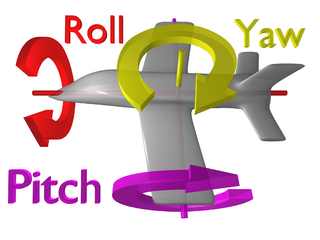

Johannes Kopf, a researcher at Microsoft, has recently published a stunning video about a software project he seems to have participated in. The video is about the automatic creation of hyperlapse videos:
We present a method for converting first-person videos, for example, captured with a helmet camera during activities such as rock climbing or bicycling, into hyperlapse videos: time-lapse videos with a smoothly moving camera.
So we are now only speaking about first-person videos. As videos created by a helmet camera might be very long and (as he accurately described it) "dead boring", you want to speed that up. A timelaps would be a subsampling to every n-th frame. Those might be very shaky and hard to watch. That means you would at least want some image stabilization.
Microsoft Hyperlapse
But the software they created does more. Much more.
Reconstruction
First, it reconstructs the geometry of the captured environment. That alone is absolutely awesome. They apply a group of techniques called structure from motion.
Path planning
Then they plan the path of the camera. This is a 6-dimensional problem for every point in time where you want to get an image. The 6 dimensions are:
- (x, y, z): Position of the camera
- roll: horizontal, vertical angle
- pitch: up, down view angle
- yaw: left, right view angle
In case you have a problem with imagining roll, pitch and yaw you should take a look at the following image:
{kind=link}

By [ZeroOne](https://commons.wikimedia.org/wiki/File:Flight_dynamics_with_text.png)
The chosen path should meet several criteria:
- It should be smooth in space
- Every path position should be close to input positions
- The path should be short
- Rotation should be smooth (that is what makes videos "shaky")
- The rendering quality should be as high as possible
The first 3 steps were achived by spline fitting.
Rendering
That step combines several output frames to render the desired camera image.